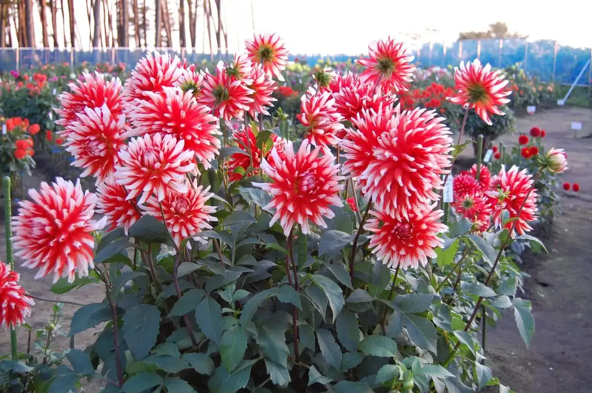
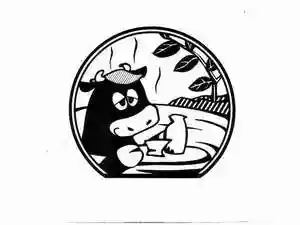
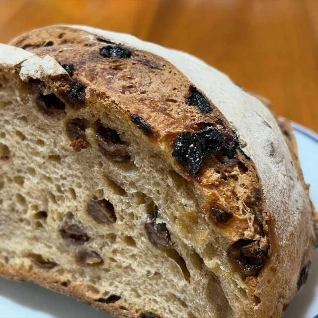
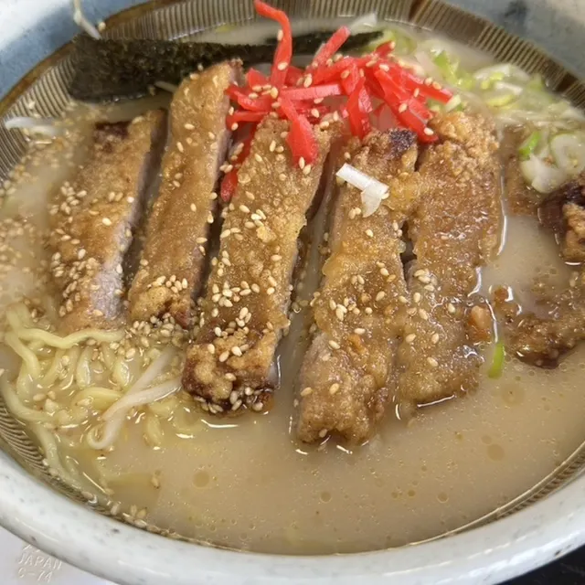
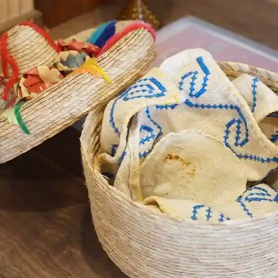
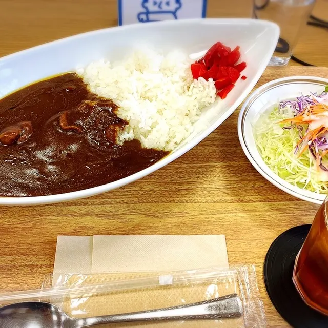
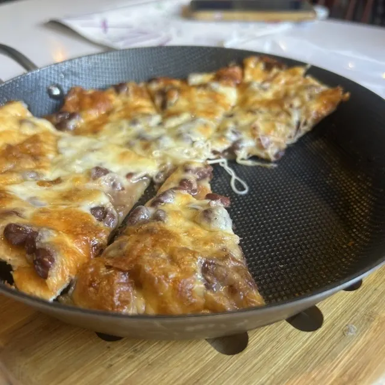
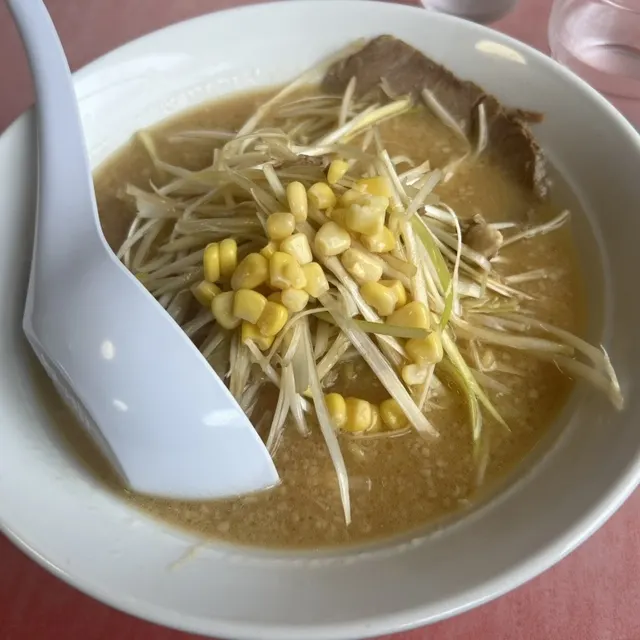
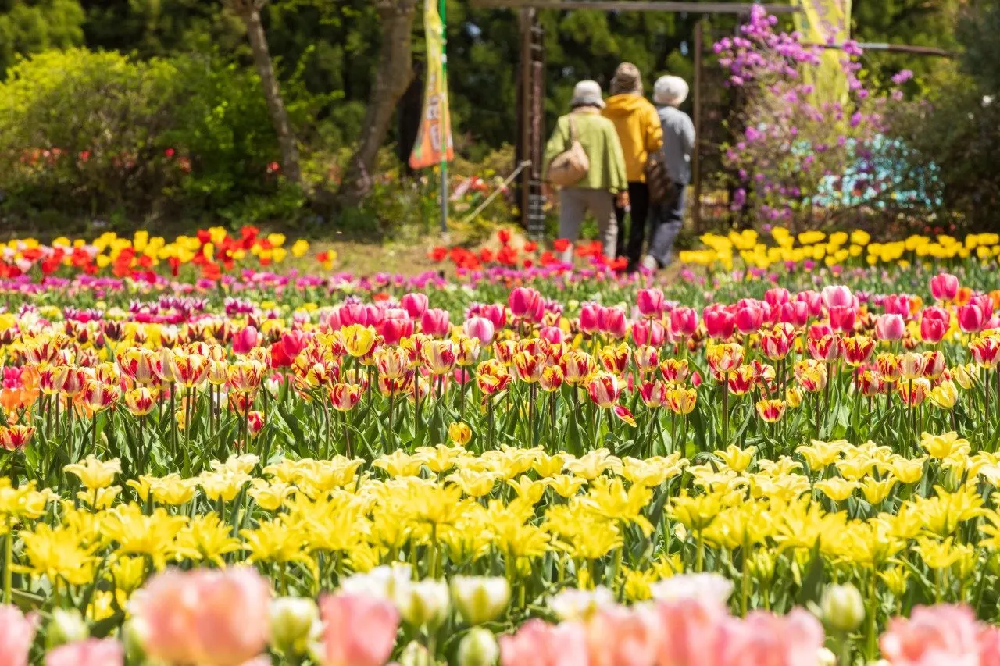
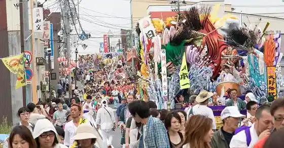

Gonohe
Gonohe · Aomori
Gonohe
Highlighted on the Aomori map.

Stay
五戸まきば温泉

Gonohe Makiba Onsen
Dining
freetime25
Freetime25
レストラン アピル
Resutoran Apiru
菓子工房 三福
Kashi Koubou Sanpuku
薪馬

Takigi Uma
からから亭

Karakara Tei
VIVA LA VIDA

Viva La Vida
こころ
Kokoro
軽食喫茶 アルエット

Keishoku Kissa Aruetto
コーヒー 模香

Koohii Mo Kaori
ラーメンショップ 五戸店

Raamenshoppu Gonohe Mise
ふれあい市ごのへ
Fureai Shi Gonohe
旅館さ・くら屋
Ryokan Sa Kura Ya
カマラードの家
Kamaraado No Ie
酒膳山海里
Shuzen Sankai Sato
菊駒酒造
Kiku Koma Shuzou
戸の郷
Ko No Sato
おあしす亭 五戸店
Oashisu Tei Gonohe Mise
コムラ醸造
Komura Jouzou
焼肉きゅるる
Yakiniku Kyururu
佐々木精肉店
Sasaki Seinikuten
山部商店
Yamabe Shouten
居酒屋 くるりん
Izakaya Kururin
さがわ
Sagawa
Sights
Hibarino Dahlia Garden
Garden of about 1,500 dahlias in some 150 varieties, blooming from summer into autumn.
Gonohe Makiba Onsen
Countryside hot spring inn whose spring rose on a ranch, with indoor and outdoor baths.
Shoko’s Tulip Garden

Even in Japan's northern region of Aomori, the spring sun brings milder weather by late April.
Gonohe Festival

Festival modeled on Kyoto's Gion Matsuri, centered on three shrines, with ornate floats hauled up steep slopes.
Gonohe de Lantern Festival
Winter festival with stage events, a tug-of-war, food stalls and a finale lantern release into the night sky.
Fureai-ichi Gonohe
Farm market opened in 2000 selling morning-picked vegetables, apples, pickles and local crafts.
Jokū Sake (Hachinohe Shurui Gonohe Brewery)
Brewery making the Jokū sake with soft groundwater drawn from 80 m below ground beside the Gonohe River.
Gonohe Onsen (Shin Tanbo no Yukko)
Local hot spring bathhouse among rice fields, founded in 1967 and rebuilt in 2001.
Eto Family Residence
Large thatched-roof house built around the 1780s for a family who served the Nanbu domain's Gonohe magistrate.
Rekishi Mirai Park
Lawn park opened in 1998 with the town library and history facilities.